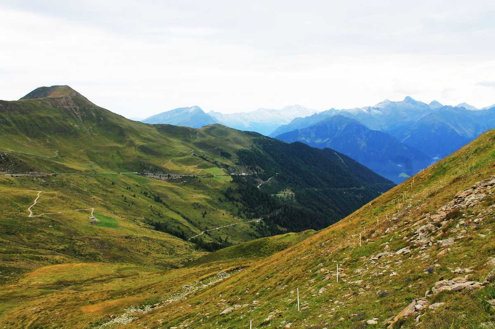
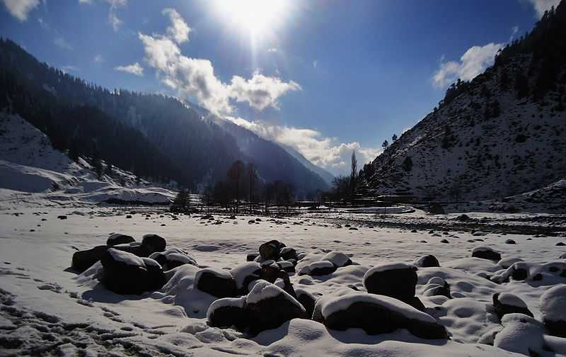

Famously known as 'Heaven on Earth, Srinagar is located in the union territory of Jammu & Kashmir, on the banks of river Jhelum. Known for its serene lakes, lush gardens, and Mughal-era architecture, Srinagar is a timeless destination that beckons travelers from around the world.
Popularly referred to as the "Paradise on Earth," Kashmir is a breathtaking valley in Jammu & Kashmir union territory in 2019. Offering unique experiences year-round, it captivates visitors with Shikara rides and Mughal gardens in Srinagar during summers and autumn where the golden hues of Chinar trees transform the landscape.
Situated at an altitude of 2730 m above sea level, Gulmarg is a popular skiing destination located in Pir Panjal Range of Union territory of Jammu and Kashmir. Surrounded by snow-covered lofty Himalayas, meadows of flowers, deep ravines, evergreen forested valleys, Gulmarg also has the world's second-highest Gondola ride.
Vaishno Devi is a temple town that's home to the famous Vaishno Devi Mandir. Located in Trikuta hills, 13 kms from Katra (in the union territory of Jammu and Kashmir); this renowned shrine allures millions of devotees from all over the world.
Sonamarg, nestled in the enchanting landscapes of Jammu and Kashmir, emerges as a picturesque hill station located 80 kilometers northeast of Srinagar. Resting at an elevation of approximately 2,730 meters above sea level, Sonamarg is a haven for travelers seeking the embrace of snow-laden fields, majestic glaciers, and serene lakes that cast a subtle spell on all who visit.

The Jewel of Srinagar, the Dal Lake is synonymous to a visit to Srinagar and is almost a visual definition of the town. Spread over 15 kms, it is the second-largest lake in Jammu & Kashmir. The mirror-like Dal Lake reflects the snow-dusted peaks of the Pir Panjal mountains while the colourful shikaras (gondolas) float around. The houseboats and shikaras are its main attractions.

Pulwama is a small town in Pulwama district in the northern state of Jammu and Kashmir. Situated at a distance of 25 km from Srinagar, Pulwama is the 6th largest city in the state. Popularly known as the "Anand of Kashmir" loosely translated to the delight of Kashmir, this place has apple orchards, waterfalls, natural springs and scenic valleys.
Jammu is the southernmost-part of the union territory of Jammu and Kashmir which sits proudly on the magnificent Shivalik mountain ranges. The Winter Capital of Kashmir, Jammu is a holy and peaceful city known for its majestic temples, religious shrines, glittering "shikhars", and cultural heritage.

Chandanwari (or Chandanwadi) is a picturesque valley situated on the outskirts of Pahalgam in Jammu & Kashmir. It is set around 16 km from Pahalgam, at an elevation of 2895 m. Remarkably, Chandanwari is regarded as a tourist destination with religious significance as it is the Gateway to the holy Amarnath Yatra.

The Shankaracharya Temple in Srinagar, located on top of the Shankaracharya Hill, is dedicated to Lord Shiva and is one of the oldest shrines in Kashmir. Also known as Jyesteshwara Temple, the temple is named after the great philosopher Shankaracharya who is believed to have visited Srinagar about ten centuries ago.

Gulmarg Gondola is the second longest and second highest cable car in the world and the prime attraction Gulmarg is known for. Divided into two phases, it ferries almost 600 people per hour to and from the Apharwat Mountain, which is where most of the winter sports happen in Gulmarg.
Amarnath, located in union territory of Jammu and Kashmir is one of the most important pilgrimage in India for the worshippers of Lord Shiva. The Amarnath cave has an enshrined Shivaling formed naturally with ice, which resembles Lord Shiva.